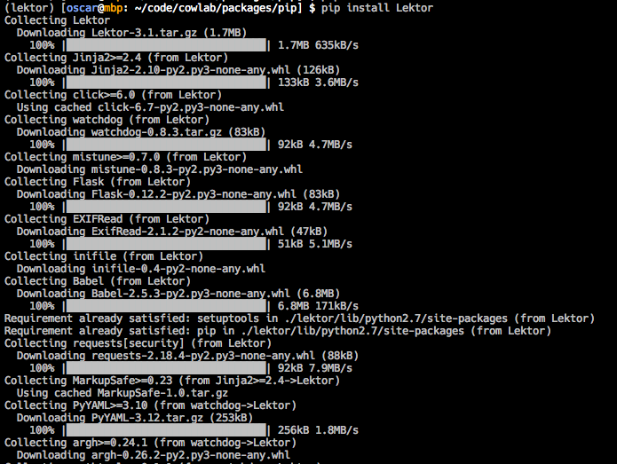
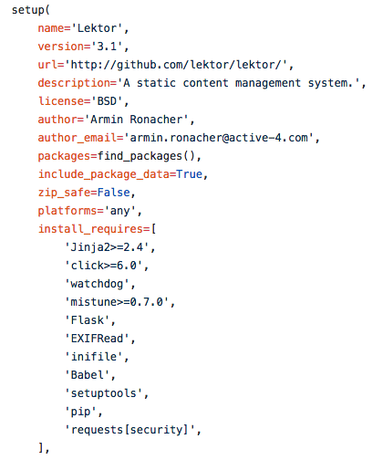
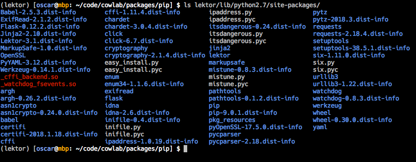
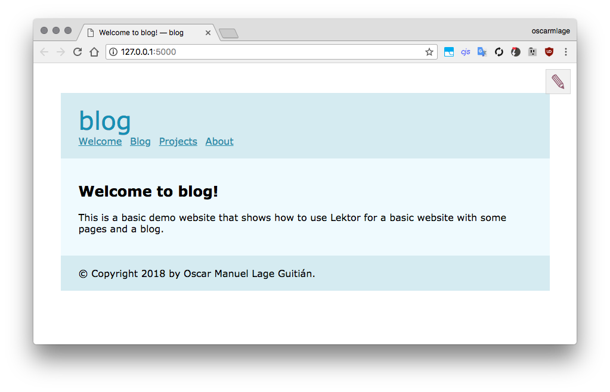

<!doctype html>
<html>
<head>
    <meta charset="utf-8">
    <meta name="viewport" content="width=device-width, initial-scale=1.0, maximum-scale=1.0, user-scalable=no">
    <title>PIP</title>
    <link rel="stylesheet" href="css/reveal.min.css">
    <link rel="stylesheet" href="css/black.min.css">
    <link rel="stylesheet" href="css/zenburn.css">
    <link rel="stylesheet" href="css/custom.css">
</head>

<body>
<div class="reveal">
    <div class="slides">
        <section data-markdown
            data-separator="^\n----\n$"
            data-separator-vertical="^\n---\n$">
            <script type="text/template">
            <!-- .slide: data-background="#242177" -->
            

            # PIP

            ## Python Package Manager

            by [oscar<span class="grey">m</span>lage](https://oscarmlage.com)

            ----

            # What is <span class="green">pip</span>

            * [pip](https://pip.pypa.io/en/stable/quickstart/) is a package management system used to install and manage software packages written in Python.

            * From **Python 2.7.9** and **Python 3.4** `pip` is included by default (`pip3` for Python 3)

            ----

            # Meaning of PIP

            * `P`ip `I`nstalls `P`ackages

            * `P`ip `I`nstalls `P`ython

            * `P`referred `I`nstaller `P`rogram

            ----

            # A bit of History (1/4)

            * **1998<!-- .element: class="grey" -->**: a mailing-list (distutils-sig) was created to discuss the development of [distutils](https://packaging.python.org/key_projects/#distutils), a package of the Python `stdlib` for creating and installing *distribution packages* (eggs, packages, modules...).

            * **2000<!-- .element: class="grey" -->**: the `distutils` was added to the `stdlib`.
            <!-- .element: class="fragment" data-fragment-index="1" -->

            * **2000<!-- .element: class="grey" -->**: a new mailing-list was created (catalog-sig) to discuss creating a centralized index of distributions.
            <!-- .element: class="fragment" data-fragment-index="2" -->

            * **2001<!-- .element: class="grey" -->**: [PEP241](https://www.python.org/dev/peps/pep-0241/) was created to standarize the metadata of distributions.
            <!-- .element: class="fragment" data-fragment-index="3" -->

            ---

            # A bit of History (2/4)

            * **2002<!-- .element: class="grey" -->**: Richard Jones started work on PyPI (the default Package Index for the Python community), and created [PEP301](https://www.python.org/dev/peps/pep-0301/) to describe it.

            * **2003<!-- .element: class="grey" -->**: [PyPi](https://pypi.python.org) was released.
            <!-- .element: class="fragment" data-fragment-index="1" -->

            * **2004<!-- .element: class="grey" -->**: the [setuptools](https://packaging.python.org/key_projects/#setuptools) was released (`easy_install`). `setuptools` is a collection of enhancements to the Python distutils that allow you to more easily build and distribute Python distributions, especially ones that have dependencies on other packages.
            <!-- .element: class="fragment" data-fragment-index="2" -->

            ---

            # A bit of History (3/4)

            * **2006<!-- .element: class="grey" -->**: [buildout](https://packaging.python.org/key_projects/#buildout) was released. Buildout is a Python-based build system for creating, assembling and deploying applications from multiple parts (python and non-python ones).

            * **2007<!-- .element: class="grey" -->**: [virtualenv](https://packaging.python.org/key_projects/#virtualenv) released. Virtualenv is a tool for creating isolated Python environments.
            <!-- .element: class="fragment" data-fragment-index="1" -->

            * **2008<!-- .element: class="grey" -->**: [pip](https://packaging.python.org/key_projects/#pip) was introduced by Ian Bicking as an alternative to easy_install (the installer included with `setuptools`).
            <!-- .element: class="fragment" data-fragment-index="2" -->

            ---

            # A bit of History (4/4)

            * **2008<!-- .element: class="grey" -->**: [distribute](https://pypi.python.org/pypi/distribute) was forked from `setuptools` by Tarek Ziade, in an effort to create a more open project.

            * **2011<!-- .element: class="grey" -->**: [PyPA](https://packaging.python.org/glossary/#term-python-packaging-authority-pypa) is created to take over the maintenance of `pip` and `virtualenv`. First oficial release of `pip`.
            <!-- .element: class="fragment" data-fragment-index="1" -->
              * Ian Bicking, Carl Meyer, Brian Rosner and Jannis Leidel
              <!-- .element: class="fragment" data-fragment-index="1" -->
              * Other proposed names were “cabal”, “pack” and “Ministry of Installation”.
              <!-- .element: class="fragment" data-fragment-index="1" -->

            * **2012<!-- .element: class="grey" -->**: The effort to include [distutils2](https://wiki.python.org/moin/Distutils2) in `stdlib` was abandoned due lack of involvement.
            <!-- .element: class="fragment" data-fragment-index="2" -->

            * **2013-now<!-- .element: class="grey" -->**: `pip` becomes more and more popular and [all the cool kids are using pip these days](http://www.clemesha.org/blog/modern-python-hacker-tools-virtualenv-fabric-pip/) instead of `easy_install` or the others.
            <!-- .element: class="fragment" data-fragment-index="3" -->

            ----

            ## You can

            Read all this stuff to try to understand something:

            * [Patrick Dubroy, So you want to install a Python Package](https://dubroy.com/blog/so-you-want-to-install-a-python-package/)
            * [James Bennett, On packaging](https://www.b-list.org/weblog/2008/dec/14/packaging/)
            * [Quora, differences tween pip and easy_install](https://www.quora.com/Python-programming-language-1/What-are-the-differences-between-Pythons-easy_install-and-pip-for-package-managment-and-installation)
            * [James Bennett, Why I like pip](https://www.b-list.org/weblog/2008/dec/15/pip/)
            * [Pip docs, Pip compared to easy_install](https://pip.readthedocs.io/en/1.1/other-tools.html#pip-compared-to-easy-install)

            (recommended for people with free time and without children)

            ---

            <!-- .slide: data-background="images/thumbsup.gif" -->
            ## Or you can...

            Just use pip.

            ----

            # Why?

            Ok, after all we're skeptical by nature.

            Let's see options...

            ---

            ## Distutils

            The most basic way to install a package is to download the source code and run:

            ```console
            $ python setup.py install
            ```

            It requires only the `distutils` module, `stdlib`. It works **BUT<!-- .element: class="red" -->**:

            * You have to manually download all the dependencies.
            * There’s no easy way to uninstall packages.
            * There’s no way to install several versions of the same package.

            ---

            ## Setuptools

            Setuptools and `easy_install` were created to solve these problems.

            It's a 3rd party library that allows Python to understand `.egg` files and `easy_install` is able to download+install package + **all its dependencies**. **BUT<!-- .element: class="red" -->**:

            * If some of the dependencies fails, the installation is not usable.
            * Error codes are incomprehensible.
            * Version Control Systems are not supported.
            * Really difficult to uninstall (there is no an `easy_uninstall` tool).

            ---

            ## PIP

            And pip is great **BECAUSE<!-- .element: class="green" -->**:

            * Downloads all dependencies before installation: ensure install fidelity.
            * Install straight from version control systems such as `git`, `mercurial`, `subversion`, and `bazaar`.
            * Support uninstallation of packages.
            * Simple to define fixed sets of requirements (`pip freeze`).
            * Works perfect with `virtualenv`.

            ----

            # Main syntax

            Common operations:

            ```console
            $ pip install whatever
            $ pip install -r requirements.txt
            $ pip install -e git+https://github.com/foobar/foobar.git
            $ pip help install
            ```

            ```console
            $ pip uninstall whatever
            $ pip help uninstall
            ```

            ```console
            $ pip list
            $ pip freeze
            $ pip help
            ```

            ----

            # Installation of pip

            #### Debian

            ```console
            $ apt install...
            ```

            #### OSX

            ```console
            $ brew install...
            ```

            ----

            # Task <span class="green">#1</span>

            Install a real project using pip<!-- .element: class="green" -->

            ---

            ## <span class="red">1.</span> How to install pip

            It depends on the O.S. as we did in the other slide.

            ---

            ## <span class="red">2.</span> Virtualenv

            We need to create and activate the environment with `virtualenv`:

            ```console
            $ virtualenv lektor
            $ . lektor/bin/activate
            (lektor)$
            ```

            ---

            ## <span class="red">3.</span> Install the real project

            ```console
            (env)$ pip install Lektor
            ```
            

            ---

            ### <span class="red">3.1.</span> What happened?

            Where are all those files <span class="red">FROM</span>?

            * It reads the requirements from `requirements.txt` or `setup.py`
            * 

            ---

            ### <span class="red">3.1.</span> What happened?

            Where are all those files <span class="red">GOING</span>?

            * Installed all the packages in the environment directory `env/lib/pythonX.X/site-packages`
            * 

            ---

            ## <span class="red">4.</span> Run the project

            ```console
            (env)$ lektor quickstart
            (env)$ cd blog
            (env)$ lektor server
            ```

            

            ---

            ## <span class="red">5.</span> Other stuff

            * Explain different environments for testing, devel or production

            ----

            # Task <span class="green">#2</span>

            Create a package from scratch<!-- .element: class="green" -->

            ---

            ## <span class="red">1.</span> Package skel

            ---

            ## <span class="red">2.</span> Publish the package

            ----

            # Best practices

            * Use pip + virtualenv
            * User version pinning

            ----

            # Resources

            * [Documentation](https://pip.pypa.io/en/stable/)
            * [Pip in PyPi](https://pypi.python.org/pypi/pip)
            * [Github page of pip](https://github.com/pypa/pip)
            * [Python Packaging Authority](https://www.pypa.io/en/latest/)
            * [Python Packaging User Guide](https://packaging.python.org/)

            ----

            <!-- .slide: data-background="#242177" -->
            

            # Thanks

            </script>
        </section>

    </div>
</div>

<script src="js/head.min.js"></script>
<script src="js/reveal.min.js"></script>
<script>
    Reveal.initialize({
        history: true,

        dependencies: [
            { src: 'js/marked.js' },
            { src: 'js/markdown.min.js' },
            { src: 'js/highlight.min.js',
              async: true, callback: function() { hljs.initHighlightingOnLoad(); } }
        ],

        width: "60%",
        height: "100%",
        margin: 0,
        minScale: 1,
        maxScale: 1,
        controls: true,
            progress: true,
            center: true,
            transition: 'slide'
    });
</script>
</body>
</html>